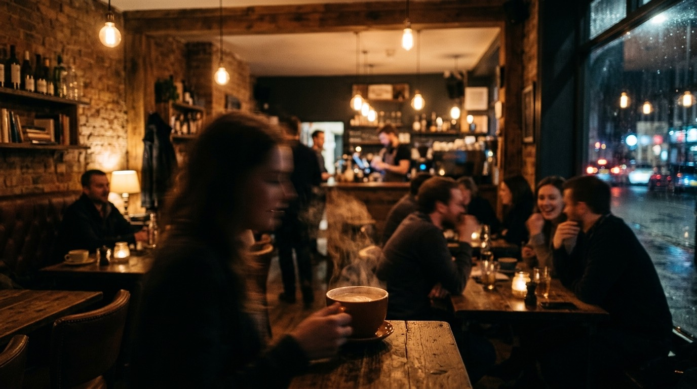

That perfect coffee shop hum — the one where you're productive without trying. Now in your headphones, wherever you are.
Start ListeningResearch shows moderate ambient noise (around 70 dB — roughly coffee shop level) enhances creative thinking. Too quiet and your brain has nothing to tune out. Too loud and you can't focus. Cafe ambience hits the sweet spot.
Drift doesn't just play a cafe recording on loop. You build the cafe yourself. Want rain on the window? Add it. Prefer a fireplace in the corner? Slide it in. The murmur stays, but the atmosphere is yours.
Rainy Cafe — the classic. rain outside, chatter inside, vinyl warmth underneath.
Fireside Cafe — cafe at 50%, fireplace at 40%, vinyl at 15%. cozy and productive.
Focus Cafe — cafe at 35%, brown noise at 50%. the chatter fades behind the warmth.
Drift runs in your browser — no app to download, no account to create. Bookmark it, open it when you sit down to work, close it when you're done. Your mix saves automatically.